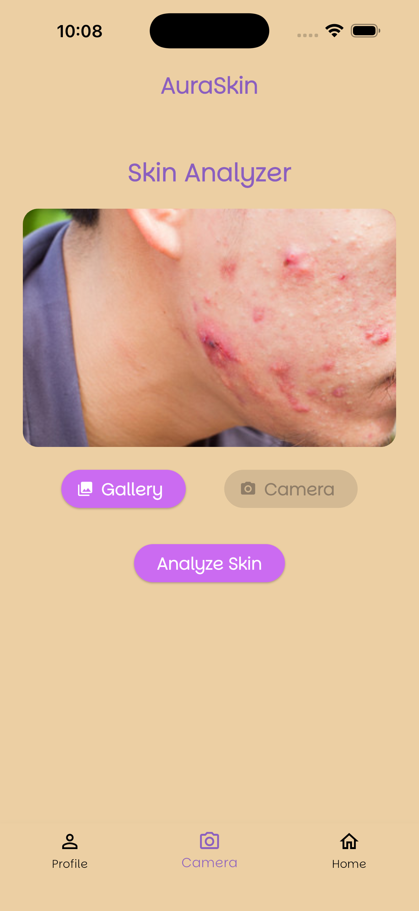
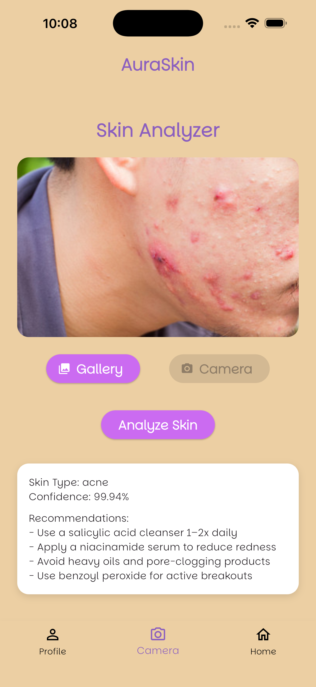
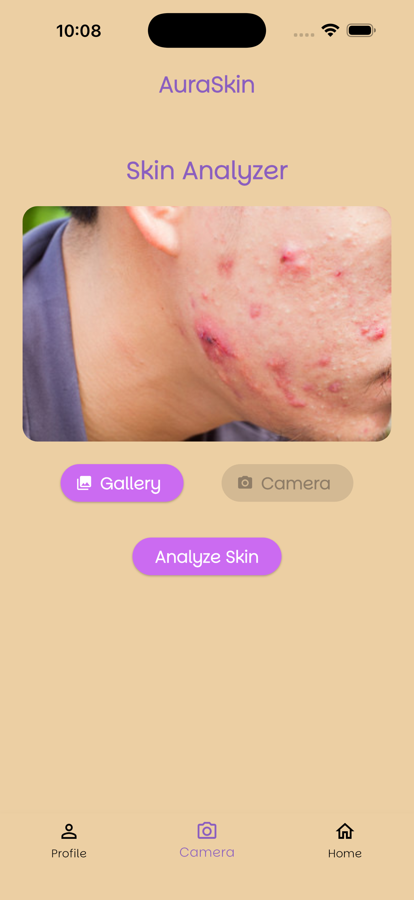
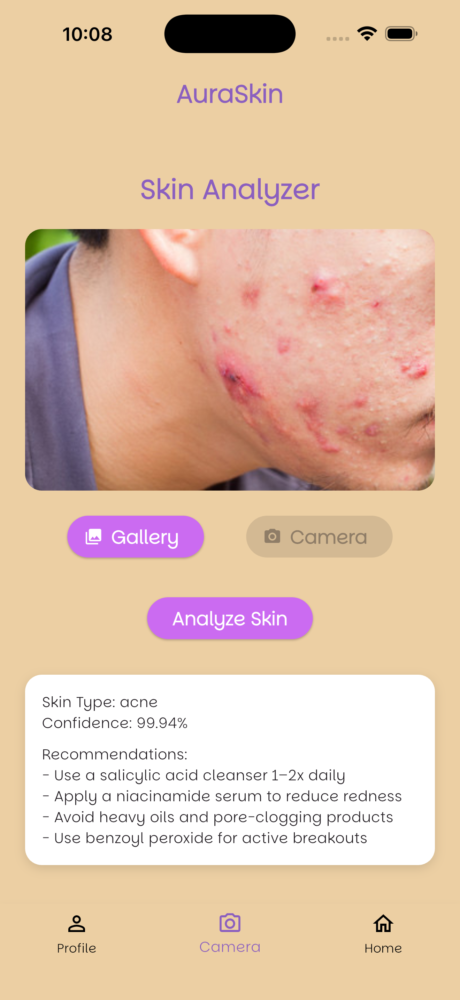

Welcome to AuraSkin
A mobile AI-powered skincare analysis application designed to detect acne, dark spots, and normal skin types using a custom-trained MobileNet model.
[AC3] AuraSkin | AI 7993 | Fall 2025
A mobile AI-powered skincare analysis application designed to detect acne, dark spots, and normal skin types using a custom-trained MobileNet model.
Nyah Robinson
Graduate Student – Master of Science in Artificial Intelligence
Kennesaw State University
AuraSkin uses a lightweight convolutional neural network (MobileNetV2) to classify skin conditions and recommend skincare steps. The app is built using Flutter and connects to a FastAPI backend where image analysis is performed.
The model was trained on a curated dataset of 300 labeled skin images: acne, normal, and dark spots. Images were preprocessed, augmented, and fed into a MobileNetV2 transfer learning pipeline. Final accuracy exceeded expectations due to balanced training and validation.
 


